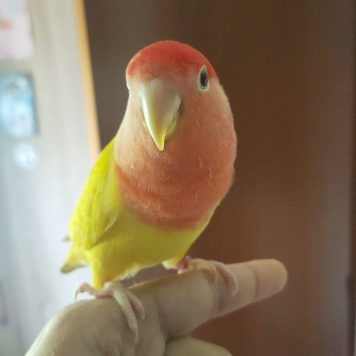

¡Son súper fascinantes!
Las aves son seres fascinantes que despiertan admiración. Su capacidad de vuelo, sus variados colores y sus melodiosos cantos las convierten en criaturas únicas. Su adaptabilidad a diferentes entornos y su diversidad de especies son asombrosas.
Observar su comportamiento, desde construir nidos hasta migrar largas distancias, nos muestra la maravilla de la naturaleza y nos invita a apreciar la belleza y singularidad de las aves.
Aprende la forma de cuidarlos
Cuidar aves es una experiencia fascinante y gratificante. Requiere responsabilidad, paciencia y amor por estos seres alados. Observar su comportamiento, aprender sobre sus necesidades y brindarles cuidados adecuados nos conecta con la naturaleza.
La interacción diaria, el vínculo que se crea y el privilegio de ser testigo de su belleza y singularidad hacen que cuidar aves sea una experiencia verdaderamente interesante e enriquecedora.

Las aves exóticas mas comunes
Ninfas

Los Nymphicus hollandicus, también conocidos como cacatúas ninfa, son aves carismáticas y encantadoras, apreciadas por su personalidad juguetona y su característico copete.
Agapornis
Los Agapornis, también conocidos como inseparables, son aves sociales y amorosas, reconocidas por su fuerte vínculo de pareja.